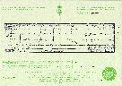

See also
- George DAVIES's parents: Thomas Walter DAVIES (1827?-bef1871) and Elizabeth WILLIAMS (1829?- )
- George DAVIES's siblings: William DAVIES (1852?- ), Henry DAVIES (1853?- ), Thomas W DAVIES (1855?- ), Elizabeth Ann DAVIES (1856?- ), Elijah DAVIES (1858?- ) and Eira DAVIES (c. 1862- )
- Rachel RUSHMER's father: Valentine RUSHMER ( -bef1889)
Family of George DAVIES and Rachel RUSHMER


1889, 1889 Marriage Certificate between George Davies and Rachel Rushmer
Husband:
George DAVIES (1864- )
Wife:
Rachel RUSHMER (1867- )
Children:
Marriage:
1 Jan 1889
Cardiff, Glamorganshire, Wales1
Address: Register Office
Husband: George DAVIES
Name:
George DAVIES
Sex:
Male
Father:
Mother:
Birth:
8 May 1864
Address: Derllwyn Row
Residence:
17 May 1864 (age 0)
Ynisawdre, Bridgend, Glamorganshire, Wales2
Address: Derllwyn Row
Census:
2 Apr 1871 (age 6)
St Brides Minor, Bridgend, Glamorganshire, Wales5
Address: Glamorgan Arms Cottage, Tondu
Occupation:
2 Apr 1871 (age 6)
Scholar; St Brides Minor, Bridgend, Glamorganshire, Wales5
Census:
3 Apr 1881 (age 16)
St Brides Minor, Bridgend, Glamorganshire, Wales6
Address: 183 Glamorgan Arms Cottages
Occupation:
3 Apr 1881 (age 16)
Smiths apprentice (blacksmith); St Brides Minor, Bridgend, Glamorganshire, Wales6
Residence:
1 Jan 1889 (age 24)
Roath, Cardiff, Glamorganshire, Wales1
Address: 7, James Street
Occupation:
1 Jan 1889 (age 24)
Smith; Roath, Cardiff, Glamorganshire, Wales1
Residence:
22 Sep 1890 (age 26)
Roath, Cardiff, Glamorganshire, Wales7
Address: 137, Upper Keppock Street
Occupation:
22 Sep 1890 (age 26)
Blacksmith Journeyman; Roath, Cardiff, Glamorganshire, Wales7
Census:
5 Apr 1891 (age 27)
Roath, Cardiff, Glamorganshire, Wales3
Address: 137 Keppoch Street
Occupation:
5 Apr 1891 (age 26)
Blacksmith; Roath, Cardiff, Glamorganshire, Wales3
Employer/Employed/Neither Employer nor Employed: Employed
Census:
31 Mar 1901 (age 36)
Barry, Glamorganshire, Wales4
Address: 20 Kingsland Crescent
Occupation:
31 Mar 1901 (age 36)
Blacksmith; Barry, Glamorganshire, Wales4
Employer, Worker, or Own account: Worker
Occupation:
27 Dec 1917 (age 53)
Foreman Blacksmith8
Witness:
27 Dec 1917 (age 53)
George DAVIES witnessed the marriage of William Henry HOWELL and Blodwen Anne DAVIES on 27 December 1917 in Cadoxton, Barry, Glamorganshire, Wales8
Wife: Rachel RUSHMER
Name:
Rachel RUSHMER3
Sex:
Female
Father:
Mother:
-
Birth:
1867
Residence:
1 Jan 1889 (age 21-22)
Cardiff, Glamorganshire, Wales1
Address: The Parade [, Cardiff, Glamorganshire, Wales]
Informant:
13 Aug 1890 (age 22-23)
Rachel RUSHMER was informant on the birth certificate for Blodwen Anne DAVIES on 13 August 1890 in Roath, Cardiff, Glamorganshire, Wales7
Residence:
22 Sep 1890 (age 22-23)
Roath, Cardiff, Glamorganshire, Wales7
Address: 137, Upper Keppock Street
Census:
5 Apr 1891 (age 24)
Roath, Cardiff, Glamorganshire, Wales3
Address: 137 Keppoch Street
Census:
31 Mar 1901 (age 34)
Barry, Glamorganshire, Wales4
Address: 20 Kingsland Crescent
Child 1: Elizabeth DAVIES
Child 2: Blodwen Anne DAVIES

Daughter: Blodwen Anne DAVIES, 1942, age 52

Spouse: William Henry HOWELL, 1945, age 54
Name:
Blodwen Anne DAVIES
Sex:
Female
Spouse:
Birth:
13 Aug 1890
Roath, Cardiff, Glamorganshire, Wales7
Address: 137, Upper Keppock Street
Residence:
22 Sep 1890 (age 0)
Roath, Cardiff, Glamorganshire, Wales7
Address: 137, Upper Keppock Street
Census:
5 Apr 1891 (age 0)
Roath, Cardiff, Glamorganshire, Wales3
Address: 137 Keppoch Street
Census:
31 Mar 1901 (age 10)
Barry, Glamorganshire, Wales4
Address: 20 Kingsland Crescent
Residence:
27 Dec 1917 (age 27)
Barry Dock, Barry, Glamorganshire, Wales8
Address: 17, Kingsland Crescent
Census:
19 Jun 1921 (age 30 yrs 10 mns)
Barry, Glamorganshire, Wales9
Address: Buttrills Road
Occupation:
19 Jun 1921 (age 30)
Household Duties; Barry, Glamorganshire, Wales9
Census:
29 Sep 1939 (age 49)
West Cross, Swansea, Glamorganshire, England10
Address: 42 Druslyn Road
Occupation:
29 Sep 1939 (age 49)
Upaid domestic duties; West Cross, Swansea, Glamorganshire, England10
Death:
16 Jan 1959 (age 68)
Barry, Glamorganshire, Wales
Child 3: Mary DAVIES
Name:
Mary DAVIES
Sex:
Female
Spouse:
Child 4: Lucy Elvira DAVIES
Sources
- 1.
Marriage Cardiff, Glamorganshire, Wales (Register Office, ) 1 Jan 1889 George DAVIES & Rachel Rushmer, (106).
- 2.
Birth Ynisawdre, Bridgend, Glamorganshire, Wales (Derllwyn Row) 8 May 1864 George DAVIES, (392).
- 3.
1891 Census Entry for 137 Keppock St, Roath, Cardiff, Glamorganshire, Wales, (RG12-4386-87-68). Custom Id: CENS-GB1891-WAL-GLAM-137_Keppock_Street; Cit. Date: 5 April 1891. General Register Office, Kew.
- 4.
1901 England and Wales census, 20 Kingsland Garden, Cadoxton, Barry, Glamorganshire, Wales, RG 13/4993, head of household: George Davies, Public Record Office.
- 5.
Census 1871 St Brides Minor, Bridgend, Glamorganshire, Wales RG10 Piece 5412 Page 18, (RG10 Piece 5412 Page 18). Findmypast.co.uk. Web: www.findmypast.co.uk.
- 6.
Census 1881 St Brides Minor, Bridgend, Glamorganshire, Wales RG11/5326 Folio 63 Page 33, (RG11/5326 Folio 63 Page 33). General Register Office, Kew.
- 7.
Birth Roath, Cardiff, Glamorganshire, Wales (137, Upper Keppock Street) 13 Aug 1890 Blodwen Anne DAVIES, (490). General Register Office, Kew.
- 8.
Marriage Cadoxton, Barry, Glamorganshire, Wales (The Parish Church) 27 Dec 1917 William Henry HOWELL & Blodwen Anne DAVIES, (203). A History of the Howell Family pt one Following the Main Line.
- 9.
Census 1921 Barry, Glamorganshire, Wales RG15 26535 RD 588 RS 6 ED 10, (RG15 26535 RD 588 RS 6 ED 10). General Register Office, Kew.
- 10.
Register 1939 West Cross, Swansea, Glamorganshire, England RG101/7287K/004/7, (RG101/7287K/004/7).